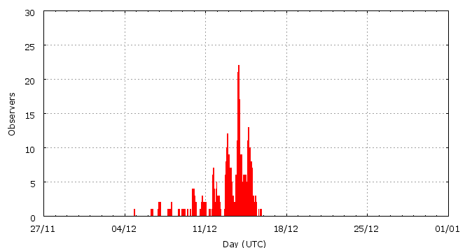

[ www.imo.net ]
This page shows automated results of the Geminids 2010, based on visual observations by volunteers astronomers collected through the report form of the International Meteor Organization (IMO). The information on this page is generated automatically; for scientific use please refer to manual analyses published in scientific journals (such as WGN). Send your feedback regarding this page to Geert Barentsen.
Page contents:
Page generated: 2012 September 19 at 20:20 UTC.
The graph below shows the ZHR (Zenithal Hourly Rate), which is the number of meteors an observer would see under a very dark sky with the radiant of the shower in zenith.
ZHRmax = 127 based on 6801 Geminids reported in 743 intervals, assuming population index r = 2.0

| Time (UTC) | Solarlon | nINT | nGEM | ZHR | Particle density | |
|---|---|---|---|---|---|---|
| 2010-12-04 21:03 | 252.458 | 1 | 1 | 28 | ±20 | 45 / 109·km3 |
| 2010-12-06 21:43 | 254.517 | 19 | 23 | 5 | ±1 | 8 / 109·km3 |
| 2010-12-07 22:41 | 255.573 | 14 | 26 | 21 | ±4 | 33 / 109·km3 |
| 2010-12-09 19:11 | 257.457 | 26 | 59 | 11 | ±1 | 18 / 109·km3 |
| 2010-12-10 15:32 | 258.318 | 22 | 70 | 11 | ±1 | 18 / 109·km3 |
| 2010-12-11 18:33 | 259.463 | 21 | 99 | 22 | ±2 | 35 / 109·km3 |
| 2010-12-12 09:38 | 260.102 | 43 | 203 | 22 | ±2 | 35 / 109·km3 |
| 2010-12-12 22:31 | 260.648 | 31 | 203 | 37 | ±3 | 59 / 109·km3 |
| 2010-12-13 00:13 | 260.720 | 23 | 219 | 42 | ±3 | 67 / 109·km3 |
| 2010-12-13 01:32 | 260.775 | 21 | 203 | 38 | ±3 | 61 / 109·km3 |
| 2010-12-13 03:10 | 260.845 | 21 | 217 | 44 | ±3 | 70 / 109·km3 |
| 2010-12-13 06:00 | 260.965 | 25 | 228 | 44 | ±3 | 70 / 109·km3 |
| 2010-12-13 15:30 | 261.367 | 33 | 200 | 39 | ±3 | 62 / 109·km3 |
| 2010-12-13 20:13 | 261.567 | 20 | 200 | 82 | ±6 | 131 / 109·km3 |
| 2010-12-13 21:15 | 261.611 | 40 | 422 | 94 | ±5 | 150 / 109·km3 |
| 2010-12-13 22:20 | 261.657 | 33 | 346 | 100 | ±5 | 159 / 109·km3 |
| 2010-12-13 23:23 | 261.701 | 16 | 205 | 108 | ±8 | 172 / 109·km3 |
| 2010-12-14 00:32 | 261.750 | 22 | 328 | 112 | ±6 | 178 / 109·km3 |
| 2010-12-14 01:24 | 261.787 | 26 | 392 | 104 | ±5 | 166 / 109·km3 |
| 2010-12-14 02:27 | 261.831 | 27 | 419 | 127 | ±6 | 202 / 109·km3 |
| 2010-12-14 03:22 | 261.870 | 21 | 308 | 101 | ±6 | 161 / 109·km3 |
| 2010-12-14 04:47 | 261.930 | 12 | 207 | 94 | ±7 | 150 / 109·km3 |
| 2010-12-14 07:17 | 262.036 | 13 | 207 | 102 | ±7 | 162 / 109·km3 |
| 2010-12-14 08:26 | 262.085 | 14 | 210 | 114 | ±8 | 182 / 109·km3 |
| 2010-12-14 09:47 | 262.142 | 13 | 205 | 94 | ±7 | 150 / 109·km3 |
| 2010-12-14 11:02 | 262.195 | 30 | 213 | 91 | ±6 | 145 / 109·km3 |
| 2010-12-14 14:31 | 262.343 | 9 | 228 | 77 | ±5 | 123 / 109·km3 |
| 2010-12-14 17:35 | 262.472 | 22 | 206 | 59 | ±4 | 94 / 109·km3 |
| 2010-12-14 18:45 | 262.522 | 24 | 202 | 104 | ±7 | 166 / 109·km3 |
| 2010-12-14 20:08 | 262.580 | 23 | 205 | 73 | ±5 | 116 / 109·km3 |
| 2010-12-14 22:03 | 262.662 | 22 | 201 | 51 | ±4 | 81 / 109·km3 |
| 2010-12-15 00:26 | 262.763 | 28 | 203 | 54 | ±4 | 86 / 109·km3 |
| 2010-12-15 05:02 | 262.957 | 28 | 143 | 34 | ±3 | 54 / 109·km3 |
The reported intervals are automatically added together into the bins shown above, based on the number of meteors and the distribution of the intervals. For each bin, the following parameters are computed:
Data has been received from 101 observers in 26 countries. Thank you for your efforts!
Note: click on the map for an interactive version.

| Observer | Country | Teff | nGEM |
|---|---|---|---|
| Ioan Agavriloaiei | Romania | 1.30h | 31 |
| Salvador Aguirre | Mexico | 12.16h | 411 |
| Alexandre Amorim | Brazil | 3.60h | 5 |
| János Bakos | Hungary | 3.08h | 17 |
| Asmita Bhandare | India | 5.56h | 36 |
| Suresh Bhattarai | Nepal | 3.00h | 57 |
| Longji Bing | China | 0.51h | 4 |
| Swapnil Bokade | India | 1.44h | 47 |
| Jens Briesemeister | Germany | 2.70h | 36 |
| Andreas Buchmann | Switzerland | 2.07h | 86 |
| Yi Cao | China | 0.48h | 0 |
| Geoff Carstairs | Australia | 1.83h | 12 |
| Simiao Cheng | China | 0.40h | 1 |
| Shao Chendi | China | 1.88h | 12 |
| Sherry Chhabra | India | 7.57h | 59 |
| Carmelita Cook | Philippines | 1.96h | 8 |
| Tim Cooper | South Africa | 2.33h | 18 |
| Paul Craft | Australia | 3.54h | 10 |
| Mladen Dabic | Croatia | 1.06h | 44 |
| Anderson Dantas | Brazil | 5.25h | 52 |
| Neha Das | India | 2.58h | 21 |
| Mark Davis | United States | 6.21h | 106 |
| Chander, Sachin, Devgun, Bahmba | India | 2.18h | 344 |
| Suraj Dhiwar | India | 6.15h | 78 |
| Shlomi Eini | Israel | 3.20h | 80 |
| Craig Ewing | United States | 3.70h | 175 |
| Stanislav Fort | Czech Republic | 0.48h | 19 |
| Wei Ge | China | 0.75h | 10 |
| William Godley | United States | 4.59h | 104 |
| Sylvie Gorkova | Czech Republic | 1.87h | 36 |
| Mitja Govedic | Slovenia | 1.15h | 77 |
| Wayne T. Hally | United States | 3.75h | 5 |
| Vilem Heblik | Czech Republic | 7.65h | 112 |
| Carl Hergenrother | United States | 4.77h | 209 |
| Kamil Hornoch | Czech Republic | 2.47h | 157 |
| Petr Horalek | Czech Republic | 3.53h | 53 |
| Di Hu | China | 2.87h | 26 |
| Jeremy Jefferis | United States | 0.43h | 12 |
| Weiliang Jin | China | 1.15h | 7 |
| Carl Johannink | Germany | 2.28h | 65 |
| Bhargav Joshi | India | 2.50h | 10 |
| Javor Kac | Slovenia | 2.60h | 35 |
| Jay Kansara | India | 2.69h | 37 |
| Akshay Khachane | India | 2.79h | 26 |
| Stanislav Korotkiy | Russia | 19.98h | 681 |
| Jakub Koukal | Czech Republic | 9.30h | 113 |
| Roman Kovalyk | Italy | 11.09h | 94 |
| Peter Kozich | unknown | 0.92h | 64 |
| Rhishikesh Kulkarni | India | 2.09h | 79 |
| Sneha Kulkarni | India | 2.40h | 35 |
| Peter Van Leuteren | Netherlands | 5.31h | 156 |
| Anna S. Levina | Israel | 14.07h | 484 |
| Simon Levin | Israel | 16.65h | 696 |
| Mike Linnolt | United States | 1.00h | 77 |
| Zefeng Li | China | 0.66h | 6 |
| Rodrigo Lopez Solorzano | Mexico | 3.25h | 30 |
| Jer Nan Lou | Taiwan | 0.18h | 1 |
| Hartwig Luthen | Germany | 0.95h | 37 |
| Santosh Mahato | India | 0.95h | 6 |
| Jiawei Ma | China | 0.83h | 16 |
| Qiang Ma | China | 1.00h | 3 |
| Adam Marsh | Australia | 0.92h | 13 |
| Khalid Marwat | Pakistan | 2.91h | 56 |
| Mayuresh Marathe | India | 2.90h | 13 |
| Mikhail Maslov | Russia | 1.00h | 1 |
| Marco Micheli | Italy | 1.06h | 23 |
| Koen Miskotte | Netherlands | 11.02h | 594 |
| Vitaliy Nikolaev | Russia | 1.14h | 25 |
| Francisco Ocana Gonzalez | Spain | 2.13h | 63 |
| Rishikesh Pandit | India | 7.57h | 203 |
| Xi Qian | China | 0.77h | 3 |
| Hongyi Qin | China | 2.94h | 133 |
| Hermitanio Quinto | Philippines | 4.29h | 11 |
| Jurgen Rendtel | Germany | 5.83h | 95 |
| Martin Rudd | Australia | 0.92h | 17 |
| Joao Santos | Brazil | 0.91h | 0 |
| João Ricardo Santos | Brazil | 0.37h | 0 |
| Debasis Sarkar | India | 1.50h | 72 |
| Mikiya Sato | Japan | 1.00h | 64 |
| Tomoko Sato | Japan | 1.50h | 87 |
| Alex Scholten | unknown | 3.50h | 148 |
| Sergei Schmalz | Germany | 3.12h | 59 |
| Andrey Semenuta | Kazakhstan | 1.90h | 8 |
| Sanket Sen | India | 2.32h | 11 |
| Hideki Seo | Japan | 1.00h | 57 |
| Shashank Shekhar | India | 1.50h | 60 |
| Yufei Shen | China | 1.47h | 15 |
| Dhanashree Shinde | India | 3.54h | 53 |
| Costantino Sigismondi | Italy | 1.61h | 6 |
| Richard Taibi | United States | 1.50h | 8 |
| Kazumi Terakubo | Japan | 2h | 72 |
| Rafael Ruben Torregrosa Soler | Spain | 1.00h | 9 |
| Shigeo Uchiyama | Japan | 2.00h | 101 |
| Hendrik Vandenbruaene | Belgium | 4.47h | 167 |
| Michel Vandeputte | Belgium | 13.25h | 324 |
| Wienie Van Der Oord | Israel | 1.48h | 43 |
| Daniel Verde Van Ouytsel | Spain | 1.74h | 56 |
| Bin Wang | China | 0.40h | 4 |
| Kunlun Wang | China | 1.32h | 12 |
| Suqin Wang | China | 2.10h | 4 |
| Xiaofan Wei | China | 3.00h | 97 |
| Oliver Wusk | Germany | 3.50h | 58 |
| Weizhou Zeng | China | 2.90h | 54 |
| Xiang Zhan | China | 1.68h | 86 |
| Dantong Zhu | China | 1.61h | 7 |
Create your own analysis. The files below can be opened using Excel:
gem2010_rate.csv (number of meteors per interval per observer)
gem2010_magn.csv (number of meteors per magnitude bin per observer)
The information on this page may be distributed freely provided credit is given to the International Meteor Organization (IMO) and, when possible, to the individual observers. The computer facilities to generate this page are provided by the Urania Public Observatory in Belgium and Armagh Observatory in Northern Ireland.
References: